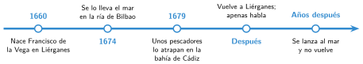
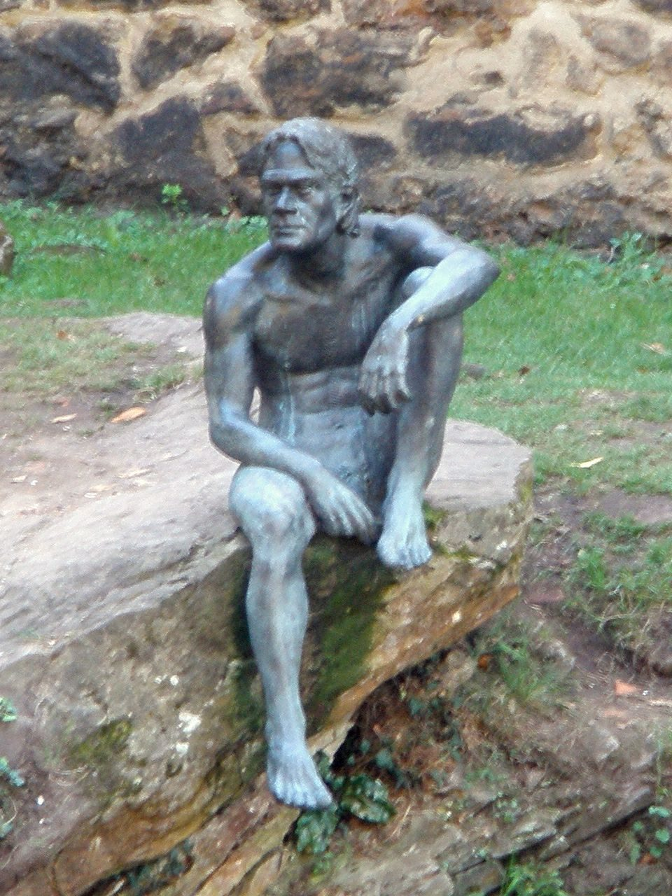

Leyendas de lugares de Cantabria
Criterios: PC 4.1, PC 4.3, PC 7.3
🤔 Pienso5 min
Qué hago aquí: Piensa un momento y contesta con lo que ya sabes. No pasa nada si no lo sabes: es para empezar.
¿Conoces alguna historia curiosa, misteriosa o de miedo de tu pueblo o tu barrio? ¿Quién te la contó?
📖 Leo y aprendo15 min
Qué hago aquí: Lee despacio, mira los dibujos y los ejemplos, y quédate con la idea clave del final.
Muchas leyendas están unidas a un lugar: un puente, una cueva, una peña, un pozo. Dan identidad al pueblo y hoy atraen visitantes. La más famosa de Cantabria es la del hombre pez.


Foto: Zarateman · CC0 · Liérganes - Escultura del Hombre Pez.jpg
✏️ Hago25 min
Qué hago aquí: Haz las actividades en orden. Empieza siempre por las básicas.
Separa en dos columnas los elementos probablemente reales y los fantásticos de la leyenda del hombre pez. Justifica cada uno.
Calcula con la línea del tiempo la edad de Francisco al desaparecer y al ser encontrado en Cádiz. ¿Cuánto tiempo estuvo desaparecido?
Explica por qué Feijoo, que no creía en milagros sin pruebas, consideró cierto el caso. ¿Qué tipo de prueba aceptó? ¿Te parece suficiente?
Explica por qué las leyendas de lugares dan identidad a un pueblo. Pon un ejemplo de Cantabria distinto del hombre pez.
Propón una explicación científica posible de lo que pudo ocurrir con Francisco de la Vega. ¿Qué datos necesitarías para comprobarla?
Liérganes usa su leyenda para atraer turismo. Diseña una ruta del hombre pez con cuatro paradas y explica qué patrimonio (natural, cultural, inmaterial) se ve en cada una.
✏️ Puedes responder escribiendo, con un dibujo o un esquema, o contándolo en voz alta.
Entrevista a un familiar y recoge una leyenda de tu pueblo o barrio. Escríbela con el nombre de quien la cuenta, su edad, el lugar y la fecha.
🚀 Amplío (si quieres saber más)
Qué hago aquí: ¿Has terminado? Lee la curiosidad o elige el reto. Es voluntario.
Busca el texto de Feijoo sobre el hombre pez (está en su Teatro crítico universal). Lee un fragmento y resume en cinco líneas sus argumentos. ¿Qué método usa? ¿Qué le criticarías hoy?
✅ Compruebo5 min
Qué hago aquí: Contesta sin mirar la ficha y marca cómo lo llevas.